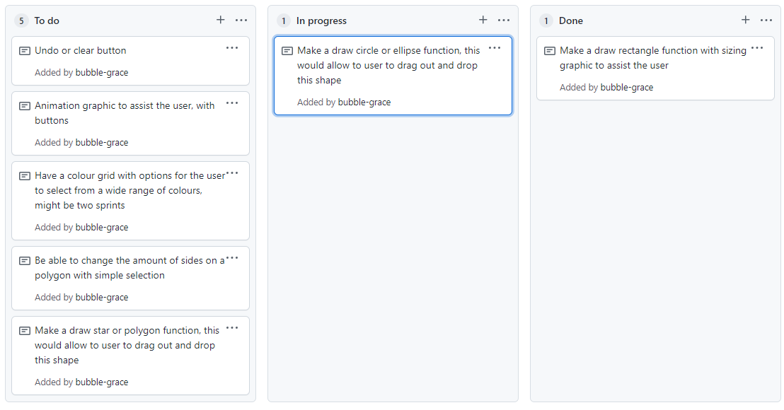
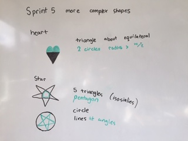

Brief
The brief is to make a web based drawing application, allowing the user to make shapes and manage colours. The purpose is to entertain young students with an interactive activity to teach them about geometric shapes. To start this project I made a plan I knew I wanted to make shapes and have colour management, so I made a brainstorm of what shapes could be made and also how colour management could be achieved by different methods. Following this I also made a project backlog with 7 basic ideas I wanted to achieve with each sprint, this is seen below.

Sprint One
Plan
The aim for sprint one is to make a Canvas with an interactive rectangles that can be sized. To achieve this I looked into using Mouse up, down and move functions so the canvas would know where the mouse was at all times. The goal was when the mouse was released a rectangle would form based on were the mouse was in relation to the starting drag point. Guidelines would be available to show the user where there intended rectangle would be if they stopped dragging the mouse there


Boards

Link to the Canvas Page
Test
Reflection
In the video above you can see the code responses correctly to the expected input, creating a rectangle of the correct proportions. Including not creating a shape when the mouse is out of the canvas. There is one main issue with this sprint and this is the circle because it responds to the width. When a rectangle is very long and not tall, the circle will have a larger radius than the height of the circle, therefore the circle is outside the rectangle. To fix this I will add an if statement if radius > height +5 make the radius the height divided by 10.
Another main issue is that if you go out of bounds it does not draw the rectangle to the bounds, only making no rectangle appear. To fix this in the following sprints I will add a cut piece of code to allow the rectangle to form but only cutting off the part that is out of bounds.
Sprint Two
Testing a Circle and an Ellipse
Planning
Videos of code
Reflection of testing
Both the circles and the ellipse have advantages and disadvantages. Both groups currently have the disadvantage of being once the mouse leaves the area they do not work once coming back into the canvas. They also both expand from the centre, which can be changed later
The ellipse can also be a circle if the width and the height are the same, the circle however can only be a circle not an ellipse. Therefore I believe that the ellipse will be more helpful as a drawing tool due to its versatility.
Sprint Two
Plan
The plan for sprint two is to make a functional drag and drop ellipse function. This is based on testing done above as I believe that an ellipse is a versatile tool that will be helpful and entertaining to use. My aim is to have a rectangle outline when the ellipse is being drawn and to expand from one point to another instead of from the centre.
Testing
Reflection
In the video above you can see the code responses correctly to the expected input, creating an ellipse of the correct proportions. Including not creating a shape when the mouse is out of the canvas. A main issue is that if you go out of bounds it does not draw the ellipse to the bounds, only making no ellipse appear. To fix this in the next version I will add a cut piece of code to allow the ellipse to form but only cutting off the part that is out of bounds.
Sprint Three
Plan
The plan for sprint three is to make a designated drawing space within the canvas, this allows the shapes to only be drawn in this drawing space. I would also like to add some buttons to allow the user to choose if they would like to draw a rectangle or an ellipse.
Pseudo Code
Testing
Reflection
I have an error when I try to draw a shape from the buttons there seems to be a delay in the outlines for the shapes. When the first shape is drawn it has no outline and then after I change shapes the original outline remains for the first shape of that type. Another error is the boundary as there currently are none so a shape can be drawn anywhere.These will be fixed in the next sprint, as I am happy with the buttons and canvas function
Sprint Four
Plan
The aim of this sprint is to fix all the errors from the previous sprints to make a function code. To do this I will add a boundary function to test the parameters of the rectangle canvas. I would also like if the shape is partly in the canvas only that area is shown.
Testing
Reflection
The main aim of the sprint was accomplished with the user only being able to draw shapes with the defined canvas area. However, there is still one main issue if the mouse starts inside the canvas area but ends up outside the canvas area the shape is still drawn. this is because that is not defined. The aim for my next sprint is to have more complex shapes to enhance the options available to the user.
Sprint Five
Plan
The aim for this sprint is to give the user options to make more complex shapes, the plan is for thr user to make either a star or a heart. When planning this I had to think about what shapes I knew how to make could be components of a heart or a star. I will do tests for this version to discover if a star should be made up from two triangles or a pentagon and 5 triangles.
Testing of Stars
I made both types of star seen above, and I believe that the five pointed star is more aesthetically pleasing and can be adapted better to continuations in following sprints. My target audience is also young children and many games targeted at this age group have five pointed stars, therefore this is a natural continuation into my online drawing game.
Once I had decided on which star to make I went about to try and implement it into my code by use of more buttons and similar functions to before
Testing
Reflection
Overall this sprint went well I have successfully added two buttons, and I am happy with the visuals for both the star and the heart. However, there is one main issue this being the flipping of the heart when the starting point is lower than the finishing point of the mouse. The heart appears upside down, this unfortunately results in a strange shape, however currently I am unsure of a solution. For my next sprint I will focus on colour management in a colour grid to allow the user to select a colour and a shape to draw.
Sprint Six
Plan
The plan for this sprint is to introduce colour management, it makes the most amount of sense to try this with only 9 colours to start with. The colours I have chosen are, white, grey, black,red, orange, yellow, green, blue and purple. I chose these colours because they are familiar to most and cover a large range with ease. I will make these into a grid make from the 9 buttons, the aim is once the colour is chosen it will continue to use that colour until told otherwise.
Reflection
This code works as expected however you can not draw a shape without a colour being selected, therefore I would like to set a colour at the start so the user can make a shape. There is an issue when the user selects both a colour and a shape the button will only allow one to look selected at once.
Sprint Seven
Plan
For this sprint I wanted to test two options for clearing objects outside my drawing canvas area. The first idea was to get the boundary and where the shape finished and use these values to clear a rectangle. The other option was to save the shape then clip it to make that the only allow the canvas area when the mouse is down. I also wanted to make my colours a different place to my buttons, to do this I made an another class called Swatch, this is very similar to the previous version however it causes less issues when both a colour and shape are selected
Testing
Clear function
Clip function
I believe that the clip function is best for this problem as it does not require values from the mouse to work, as well as clipping the dragged shape. The finding boundaries code works however the clear function also clears the grid in the background, which means it would need to be updated regularly.
Reflection
I am very happy with this sprint and the testing done to find the best solution to allow the user to only draw shapes inside the given canvas area. The colours are also easier to use there appear to be no issues at the moment and are working for all expected and unexpected inputs . The aim for the next sprint is to have an undo and redo buttons to allow the user more freedom.
Sprint Eight
Plan
For this sprint I wanted to allow the user to change their minds or start over, as when getting others to try my code they cited that this was a concern. To remedy this issue I will make undo and clear buttons. The undo will remove the last action the user did and the clear will return the canvas to the original look.
Testing
Reflection
I am happy with my undo and clear buttons as they give users more options, in order to make the user think before accidentally undoing their whole projet, the undo button gets deselected after being used. This means the user can undo more than once however they have to make a conscious decision to do so.
Sprint Nine
Plan
The plan for this sprint is to add more options for the user, this will add a line and a smiley face. As seen above there were many questions surrounding how the smiley face would look. I then decided to draw a smiley face and model more code off this. I also wanted to allow the user to choose how width they wanted to make the line/outline. Therefore I needed to make a separate class for width buttons, in which there would be three, small, medium and large.
Testing
Reflection
The buttons work, and I am pleased with the outcome as they resemble drawings I would make with pen and paper. The width function gives the user more options for how they want to personalise and use the application. For the next sprint I would like to change the amount of points the star could have to give the user further options.
Sprint Ten
Plan
The plan for this sprint is to give the user more options when drawing a star. I wanted the user to have four options for the number of points they wanted. When I first looked into making stars, I was trying to decide between five and six points so I knew that I wanted to include these as options. I also want to include a seven and eight pointed star, because I believe these will be most helpful and are visually appealing.
Testing
Reflection
After some adapting I changed part of the function for the star, to allow the points to always be evenly spaced apart. This meant that I needed to get twice the amount of points that would be visible because this is drawn based on the lines. This however was successful and we are now drawing symmetrical stars that work for a variety of points.
Sprint Eleven
Plan
The plan for sprint 11 is to tidy up my code. This involves doctyping, formatting and removing duplicated code. I will also be trying to minimise errors, and make my code easy to understand for someone else to use and adapt. I would also like to change some design features on my application.
Reflection
Once I had finished doctyping and removing the errors I could I ended up with minimal errors that are required for the program to run successfully. I edited the formatting which made it more appealing and usable by putting related content in the sam area using some usability heuristics.
I also ran my code through a code checker and the only errors were ones that could not be solved without breaking the code, apart from those my program followed standard javascript coding conventions.
Relevant Implications Summary
Usability
Usability is how easy the program is to use, this is done by clear informative user feedback to make the experience more enjoyable.
I believe that my drawing program is user-friendly because there is a hover function over the buttons and the user therefore knows where they are and what their options are. The naming is also mainly self explanatory with the width being defined as S, M, L to indicate small, medium and large. This is the same with the number of points on the star, the numbers start from 5 to indicate to the user that these buttons do not control the rectangle, ellipse or heart. So by process of deduction it must control the star. Also to help the user if a line width or a star point number is not selected but the object is selected, these values have a default.
Sustainability and Future Proofing
Future proofing and sustainability is the task of ensuring the code can be used by future generations, through easy update options, adding new features, and another developer can work on with ease. This is mostly deployed in the main.js with the buttons, this allows a person to update where the buttons are positioned based on the x, y, w, h programmed at the start which makes it
Code commenting and doctyping to make it easy to follow and understand with basic code knowledge. The code starts from a main function and this allows another developer to work on with minimal distress. I tried to explain my thought process through this code.
Sustainability and future proofing influenced many of my decisions regarding which options to use. One main trial I had was between a circle and ellipse and different sized stars. When considering these I looked at how the function could be used multiple times and which one would be easiest to adapt for later sprints. The main example of this was starts I chose to use the maths function instead of triangles which meant for later I could adapt it for multiple points.
Another sustainability feature of this code is the functions, these shape functions are used multiple times, with the rectangle being used the most as it is a basic outline for all the other shapes. In the first sprints I only had nine colours, this was because it was easier to manage in the early stages. However for the final version I changed this to a list of 27 colours for the user to choose from. This showed the ability for the code to be changed if needed, this is a great example of sustainability, and future proofing methods.
Functionality
Functionality is that the program works properly this includes not crashing despite the users not selecting a colour or a button. It also needs to meet the users requirements of being able to change shapes and colour to draw an image but also able to clear and undo if the user makes mistakes
In order to test the functionality of my code, I got others to test my code as seen in the video below to the left. Despite the users changing their mind and making decisions that might not always be what was expected. I also tested the code in Microsoft Edge as seen below to the right and it worked as expected. This was because I systematically tested after each sprint and troubleshoot errors as soon as they appeared .
What have I learnt from this planning process?
I have learnt about structuring the planning into manageable chunks, this made hard ideas much simpler and easier to follow. Each Sprint took about a week and focused on one main ideas. This started from the most basic code that could be needed which was to draw and drop a rectangle into place, to the stars with many pionts
These Sprints were achievable and allowed me to feel a sense of accomplishment on completing each one. It also gave me direction to what I needed to achieve next and the order of progression
GitHub
I used github as a control center for all my code and sprints. The kanban boards helped me to structure and keep track of my ideas and what was required for each sprint. With the doing, to do and done columns I made sure that I was on track and focused. This was also where I stored the project backlog, an ever updating file with what was happening and what had the highest priority and what was next in the big scheme.
I would also push all my code to github, this allowed me to keep track of the sprints and always have the code backed up to find it again. This also records the date and time of each sprint, with relevant comments from myself. As seen below
Decision Making
In sprint 2, I made the decision to chose between an ellipse an circle function, thai was done through many tests which highlighted the need for an Ellipse over a circle. In sprint 5 there were some tests for stars using maths. In sprint 7 I chose been a clip and a clear function for removing shapes from the canvas.
Project Backlog
Project backlog was my hub for all the ideas and things that needed to be done. These were big projects that would become sprints. The project backlog was also where ideas were placed in priority order. This was a document that changes regularly to adapt to the newest high priority item.